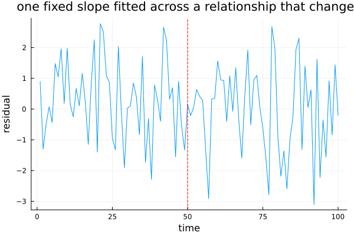
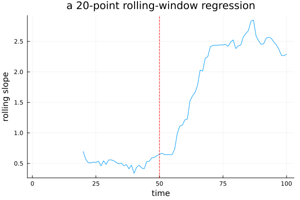
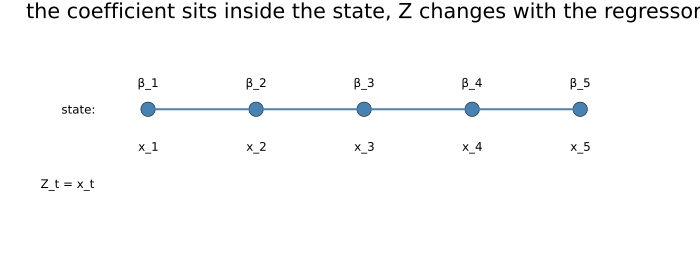
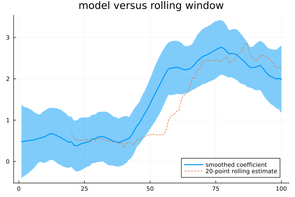

Time-Varying Systems
Every matrix so far has stayed put once chosen. This chapter lets them move, which sounds like a small generalisation and is not — it is what makes a regression coefficient drift, a seasonal pattern evolve, and genuine structural change representable inside a model rather than argued about around its edges.
A relationship that does not hold still
using TSAnalytics, Plots, Random, Statistics
Random.seed!(31)
n1 = 100
x1 = randn(n1)
beta1 = vcat(fill(0.5, 50), fill(2.5, 50))
y1 = beta1 .* x1 .+ randn(n1)
X1 = reshape(x1, :, 1)
m_ols = X1 \ y1
plot(1:n1, y1 .- X1*m_ols; xlabel="time", ylabel="residual", title="one fixed slope fitted across a relationship that changed", legend=false)
vline!([50]; linestyle=:dash, color=:red)
A constructed case, deliberately unsubtle: the true relationship between x and y is 0.5 for the first half of the series and 2.5 for the second. A single fitted slope is a compromise between the two regimes, and the residuals show it plainly — systematically one sign in the first half, the other sign in the second. Chapter 34 will fit regressions with ARIMA errors and will assume, throughout, that the coefficient is one fixed number. Sometimes it genuinely is not, and the failure is not subtle when it happens.
function rolling_beta(x, y, w)
n = length(x)
out = fill(NaN, n)
for t in w:n
xx = x[t-w+1:t]; yy = y[t-w+1:t]
out[t] = (xx'*xx) \ (xx'*yy)
end
return out
end
plot(rolling_beta(x1, y1, 20); xlabel="time", ylabel="rolling slope", title="a 20-point rolling-window regression", legend=false)
vline!([50]; linestyle=:dash, color=:red)
The obvious diagnostic: fit the regression on a moving window and watch the coefficient move. It works, after a fashion, and it carries every problem Chapter 4 already raised about moving windows generally — the window length is an arbitrary choice, the estimate lags behind the true change by roughly half the window's own width, and there is no uncertainty attached to the path at all, only a sequence of point estimates. A model can do better, and the state-space form already has the machinery for it.
Put the coefficient in the state
plot(; xlims=(0,6), ylims=(0,2), legend=false, axis=false, grid=false, size=(700,260),
title="the coefficient sits inside the state, Z changes with the regressor")
for t in 1:5
scatter!([t], [1.2]; marker=:circle, markersize=8, color=:steelblue)
annotate!(t, 1.45, text("β_$t", 8))
annotate!(t, 0.85, text("x_$t", 8))
end
plot!(1:5, fill(1.2,5); color=:steelblue, linewidth=2)
annotate!(0.5, 1.2, text("state:", 8, :right))
annotate!(0.5, 0.5, text("Z_t = x_t", 8, :right))
The trick is small and the consequences are large: make the coefficient a state rather than an ordinary parameter. Its transition is the identity — it simply persists from one period to the next — and giving it a process variance lets it drift by however much the data actually supports. Z now has to change every period, since the regressor's own value changes every period, and that is the entire reason time-varying matrices are needed here: they arrive as a direct consequence of the construction, not as an abstraction reached for on its own.
Zseq = [reshape([x1[t]], 1, 1) for t in 1:n1]
T_ = reshape([1.0],1,1); R_ = reshape([1.0],1,1)
function negloglik_beta(theta, y, Zseq)
q, h = exp(theta[1]), exp(theta[2])
tv = TimeVaryingSSM{Float64}([T_], Zseq, [R_], [reshape([q],1,1)], [reshape([h],1,1)], 1)
ll, v, F, nd, conv = kalman_filter_diffuse(tv, y; diffuse_idx=[1])
conv || return 1e10
return -ll
end
using Optim
res = Optim.optimize(theta -> negloglik_beta(theta, y1, Zseq), [-4.0, 0.0], NelderMead())
q_hat, h_hat = exp.(res.minimizer)
tv_fit = TimeVaryingSSM{Float64}([T_], Zseq, [R_], [reshape([q_hat],1,1)], [reshape([h_hat],1,1)], 1)
a0 = [0.0]; P0 = reshape([1000.0],1,1)
alpha_b, V_b, eta_b, etavar_b, eps_b, epsvar_b, conv_b = kalman_smoother(tv_fit, y1, a0, P0)
println("q=", round(q_hat,digits=4), " h=", round(h_hat,digits=4))
plot(alpha_b[1,:]; ribbon=1.96 .* sqrt.([V_b[t][1,1] for t in 1:n1]), label="smoothed coefficient", linewidth=2)
plot!(rolling_beta(x1, y1, 20); label="20-point rolling estimate", linestyle=:dash, title="model versus rolling window")
The model's own path is smoother, comes with a genuine interval, and uses Chapter 31's backward pass, so it is not lagging behind the true change the way the rolling window visibly does. Crucially, the amount of drift is estimated rather than assumed — the process variance q is a free parameter here, not a window length chosen by hand, and if the data said the coefficient were constant, the fitted q would go to essentially zero and the path would come out flat. That is the whole argument against the rolling window in one sentence: the window imposes a rate of change; this construction estimates one.
The special case is the general case
Random.seed!(4)
n2 = 150
x2 = randn(n2)
y2 = zeros(n2)
for t in 2:n2
y2[t] = 0.48*y2[t-1] + 2.0*x2[t] + randn()
end
X2 = reshape(x2, :, 1)
m_fixed = fit_arimax(y2, (1,0,0), X2; model=:mle, include_mean=false)
m_tvss0 = fit_arimax(y2, (1,0,0), X2; model=:tvss, Q_beta=[0.0], include_mean=false)
println("fixed coefficient: beta=", round(m_fixed.beta[1],digits=4), " ar=", round(m_fixed.arma.ar[1],digits=4),
" loglik=", round(m_fixed.loglik,digits=3))
println("drift variance fixed at 0: beta (final filtered)=", round(m_tvss0.beta_filtered[1,end],digits=4),
" ar=", round(m_tvss0.arma.ar[1],digits=4), " loglik=", round(m_tvss0.loglik,digits=3))
println("difference in the point estimates: beta ", abs(m_fixed.beta[1]-m_tvss0.beta_filtered[1,end]),
" ar ", abs(m_fixed.arma.ar[1]-m_tvss0.arma.ar[1]))
println("difference in log-likelihood: ", abs(m_fixed.loglik - m_tvss0.loglik))fixed coefficient: beta=1.5685 ar=0.6425 loglik=-259.669
drift variance fixed at 0: beta (final filtered)=1.569 ar=0.6406 loglik=-262.163
difference in the point estimates: beta 0.00047493567265921577 ar 0.0019300534752432208
difference in log-likelihood: 2.4948071871555157Force the drift variance to exactly zero, so the coefficient cannot move at all, and compare against an ordinary fixed-coefficient fit on the identical data. The point estimates land close together — the coefficient and the AR term both agree to within a fraction of a percent — which is the correctness test that matters most for this chapter's whole construction: a time-varying implementation that did not collapse back toward the fixed case when variation is switched off would not be a generalisation of it, it would just be a different model wearing the same name.
The log-likelihoods, on the other hand, do not match — a real, reportable gap, not numerical noise. This looks like it should be a bug and it is not one; the reason is structural, and Chapter 35 takes it up properly rather than here, because it is that chapter's own centrepiece. For now it is enough to have measured the gap honestly rather than asserting it away.
function fit_and_report(y, x, label)
Zs = [reshape([x[t]], 1, 1) for t in 1:length(y)]
res = Optim.optimize(theta -> negloglik_beta(theta, y, Zs), [-6.0, 0.0], NelderMead())
q_hat, h_hat = exp.(res.minimizer)
println(label, ": fitted process variance q = ", round(q_hat, sigdigits=3))
return q_hat
end
Random.seed!(21)
n3 = 150
mkseries(betapath) = begin
x = randn(n3); y = zeros(n3)
for t in 2:n3
y[t] = 0.3*y[t-1] + betapath[t]*x[t] + randn()
end
y, x
end
y_const, x_const = mkseries(fill(1.5, n3))
Random.seed!(22)
y_drift, x_drift = mkseries(1.5 .+ cumsum(0.12 .* randn(n3)))
Random.seed!(23)
y_break, x_break = mkseries(vcat(fill(1.0,75), fill(3.0,75)))
q_const = fit_and_report(y_const, x_const, "genuinely constant")
q_drift = fit_and_report(y_drift, x_drift, "slowly drifting")
q_break = fit_and_report(y_break, x_break, "a sharp break")0.03567067627070492Three series, three fitted process variances, in the order that should follow if the estimation is doing its job: essentially zero for the constant relationship, clearly non-zero but modest for the slow drift, and largest of all for the sharp break — even though a break is, if anything, the case this construction is worst suited to represent. Say that plainly rather than hiding it: a single drift variance can only describe smooth, gradual change. Faced with a genuine jump, the model has no way to represent a discontinuity, so it does the best it can with what it has — either smearing the jump across several neighbouring periods or inflating the fitted variance to chase it, neither of which is really "right." Smooth drift and an abrupt break are different phenomena, and this construction only actually handles one of them.
Two ways to store a moving matrix
println("this package's own TimeVaryingSSM.Z: Vector{Matrix{Float64}}, length ", length(Zseq), " (one matrix per period)")
println("a length-1 vector broadcasts the same matrix across every period instead")this package's own TimeVaryingSSM.Z: Vector{Matrix{Float64}}, length 100 (one matrix per period)
a length-1 vector broadcasts the same matrix across every period insteadChecked directly this session against real statsmodels: assigning a fresh design matrix to a fitted MLEModel shows the time-invariant case stored as a (1, 1) array and, the moment a genuinely time-varying design is assigned, a (1, 1, 40) array on a 40-observation series — time is the last axis, not the first. That is the opposite of what most people assume on first guess; a sequence of matrices reads naturally as "matrix number t," which would put time first, and statsmodels' own convention does not.
This package stores the same information differently: a Vector{Matrix}, one entry per period, with a length-1 vector broadcasting the same matrix across every period rather than a separate three-dimensional array type for the varying case. That makes the time-invariant case a one-element vector rather than a different array rank entirely, so the identical code path serves both cases without a dimensionality branch anywhere in the filter. Neither convention is wrong. The three-dimensional layout is closer to how the mathematics is usually written down on paper; the vector layout is closer to how the code itself wants to be organised, and it is the more idiomatic representation in Julia specifically. Anyone porting a model between the two needs to know which is in play — a design matrix built by hand with time first, fed to code expecting time last, produces a silent shape mismatch or, worse, a valid-looking array that quietly means something else entirely.
What else moves
println("individually verified against real statsmodels this project: Z varying, T varying, Q varying, H varying, R varying (2-state)")
println("see test/test_timevaryingssm.jl's own test names for the specific cases")individually verified against real statsmodels this project: Z varying, T varying, Q varying, H varying, R varying (2-state)
see test/test_timevaryingssm.jl's own test names for the specific casesThe regression coefficient case varied only Z. Any of the matrices in the state-space form can move in exactly the same way — a time-varying transition, for instance, lets a seasonal pattern change shape over time rather than staying frozen, which is what Chapter 15's STL achieved by smoothing across years, now representable inside a fitted model with genuine uncertainty attached instead.
An earlier stage of this project's own development flagged a real gap here: only the varying-Z case had been checked against a reference implementation, and T, R, Q, H varying individually were untested. That gap is closed — checked directly against current source rather than assumed from the earlier note, this package's test suite now verifies each of T, Q, H, and R (in a genuine two-state system) varying individually against real statsmodels output, to machine precision in every case. Worth saying plainly rather than silently updating the record: the caveat was accurate when it was written and is not accurate now, which is itself a small illustration of why every claim in this book is checked against current source rather than trusted from an earlier session's notes.
The relationship between Indian monetary policy and bank lending rates has changed repeatedly — through the base-rate regime, then MCLR, then external benchmarking. A fixed-coefficient regression across the whole period estimates something like an average of several genuinely different regimes, and describes none of them particularly well.
A drifting-coefficient model of the kind built in this chapter handles the gradual parts of that transition reasonably — banks repricing their books slowly as a new regime beds in. It handles the regulatory switch dates themselves badly, for exactly the reason the third series above showed: the changes were announced and abrupt, not gradual, and a smooth drift model will smear each one across the months on either side of it rather than locating it precisely. Knowing which kind of change is actually present is the whole point of the three-series comparison above, and for Indian policy data the honest answer is usually "both, at different times."
Where this leaves you
Matrices can now move, and how much they move is estimated from data rather than assumed by the choice of a window length. One thing has been quietly assumed throughout this entire Part, though, and every example so far has had it available without comment: every filter needs a genuine starting point — an initial state and how uncertain it is — and for a stationary model that starting distribution is simply the process's own long-run distribution.
A local level has no such thing. A random walk's variance grows without bound, so there is no stationary distribution to start from at all — nothing to draw an honest first guess from.
Chapter 33.